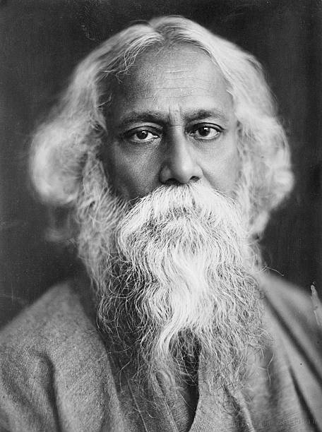

Rabindranath Tagore
Rabindranath Tagore (1861-1941) was the youngest son of Debendranath Tagore, a leader of the Brahmo Samaj,
which was a new religious sect in nineteenth-century Bengal and which attempted a revival of the ultimate
monistic basis of Hinduism as laid down in the Upanishads. He was educated at home; and although at
seventeen he was sent to England for formal schooling, he did not finish his studies there. In his mature
years, in addition to his many-sided literary activities, he managed the family estates, a project which
brought him into close touch with common humanity and increased his interest in social reforms. He also
started an experimental school at Shantiniketan where he tried his Upanishadic ideals of education. From
time to time he participated in the Indian nationalist movement, though in his own non-sentimental and
visionary way; and Gandhi, the political father of modern India, was his devoted friend. Tagore was knighted
by the ruling British Government in 1915, but within a few years he resigned the honour as a protest against
British policies in India.
Biography
Rabindranath Tagore was born as Robindronath Thakur on May 7, 1861, to
Debendranath Tagore and Sarada Devi in Calcutta, Bengal Presidency, British India(present-day
Kolkata, West Bengal, India). Tagore's mother Sarada Devi died when he was a child and his father
Debendranath Tagore travelled a lot. Therefore, Tagore was raised by servants. Dwijendranath,
Rabindranath Tagore's oldest brother, was a philosopher and poet. Tagore's other brother
Satyendranath was the first Indian to be appointed in the Indian Civil Service. His brother,
Jyotirindranath, was a musician, composer, and playwright while his sister Swarnakumari was a
novelist.
Books